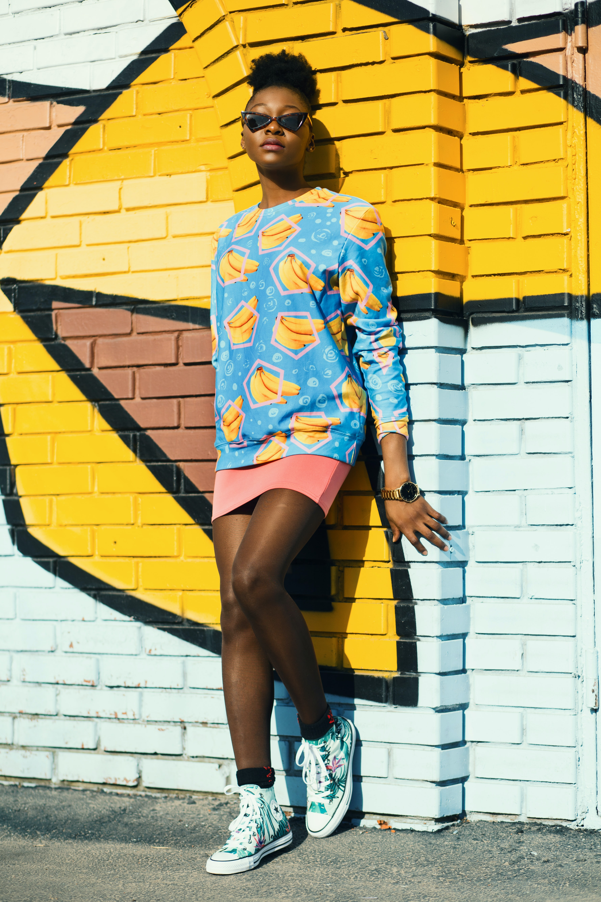

ABOUT
What is fashion? Fashion is a popular style or practice, especially in dress, footwear, accessories, cosmetics, body piercing, or furniture. Fashion is a typical trend and often has a custom in a person's style of dress. It's a force that prevails in the behavior and latest creation of the textile designer. As the more technical costume of the term is regularly associated with the term "mode, "previous usage has been adjusted to special senses such as fancy clothing or mask clothing, whereas" fashion "generally means clothing, including the person who studied it. Though fashion aspects may be feminine or masculine, some trends are androgynous. Get here immediately!
CATEGORIES
CASUAL STYLE

'casual style' is what one wears out of the office or on weekends, when you're relaxing. Some examples of casual clothes include jeans, shorts, slippers, sneakers or sneakers or flip-flops
VINTAGE STYLE

An example is a simple dress slip that appeared in the early 1990s, a style that resembled a design in the 1930s, but upon examining it would appear only superficial in appearance to the original. It is commonly referred to as "vintage style," "inspired by vintage," or "vintage reproduction." They serve as a convenient alternative to those who admire the old style but prefer modern interpretation.
ARTSY STYLE
This is an unconventional style with bright and bold colors and exaggerated prints. The clothes and accessories will have unusual silhouettes in strange shapes. Mostly handcrafted accessories and handmade fabrics.